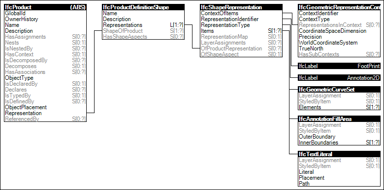

Link to this page
Link to this pageThe 'FootPrint Annotation Geometry' is the representation for the floor plan projection of the geometric representation of elements, comprising of mainly 2D curves, hatches and additional annotations such as a tag number or similar.
The following attribute values for the IfcShapeRepresentation holding this geometric representation shall be used:
Figure 36 illustrates an instance diagram.
 |
Figure 36 — FootPrint Annotation Geometry |